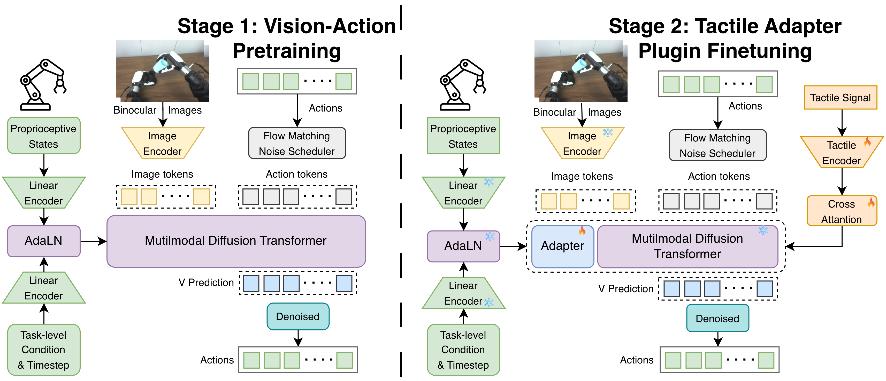

摘要
双手灵巧操作需要融合多模态输入，才能完成复杂的现实任务。为解决模态融合难题，我们提出解耦多模态扩散 Transformer DECO。它用不同的条件通路接入视觉、本体感知和触觉，使多模态融合更有结构、也更易控制。轻量适配器可以高效接入额外信号，只需更新少量参数。我们同时发布带触觉感知的双手灵巧操作数据集 DECO-50。数据通过遥操真实双臂机器人采集，共 50 小时、超过 5 百万帧。我们用 DECO-50 训练模型，并进行了超过 2,000 次真机试验。 实验中，DECO 在各项任务里取得最佳表现，平均成功率达到 72.25%，较基线高出 21%。触觉适配器进一步提高了成功率，全部任务的均值提升 10.25%，复杂接触密集任务提升 20%，同时只需调整不到 10% 的模型参数。
Bimanual dexterous manipulation relies on integrating multimodal inputs to perform complex real-world tasks. To address the challenges of effectively combining these modalities, we propose DECO, a decoupled multimodal diffusion transformer that disentangles vision, proprioception, and tactile signals through specialized conditioning pathways, enabling structured and controllable integration of multimodal inputs, with a lightweight adapter for parameter-efficient injection of additional signals.
Alongside DECO, we release DECO-50 dataset for bimanual dexterous manipulation with tactile sensing, consisting of 50 hours of data and over 5M frames, collected via teleoperation on real dual-arm robots.
We train DECO on DECO-50 and conduct extensive real-world evaluation with over 2,000 robot rollouts. Experimental results show that DECO achieves the best performance across all tasks, with a 72.25% average success rate and a 21% improvement over the baseline. Moreover, the tactile adapter brings an additional 10.25% average success rate across all tasks and a 20% gain on complex contact-rich tasks while tuning less than 10% of the model parameters.
1 引言
双手操作是人类日常生活的基础，能够完成需要双手协同完成的复杂任务。大量研究已在日常场景 (Zheng et al., 2025b) 和工业应用 (Hou et al., 2025) 中对其进行了探索。从大规模视觉学习算法到基于扩散的模型等操作策略方面的最新进展 (Brohan et al., 2023; Liu et al., 2025; Kim et al., 2024; Chi et al., 2025) ，都展现了快速的进步。然而，硬件限制，尤其是与物体进行物理交互的刚性夹爪，限制了灵活性 (An et al., 2026; Li et al., 2025) 。相比之下，人类则依靠具有丰富触觉反馈和精细运动控制的灵巧双手。为了填补这一差距，学术界越来越关注那些能更好地模拟这些能力的灵巧机器人手。
Bimanual manipulation is fundamental to human daily life, enabling complex tasks that require coordination between both hands. Extensive research has explored it in daily scenarios ( Zheng et al., 2025b ) and industrial applications ( Hou et al., 2025 ) . Recent advances in manipulation policies—from large-scale VLAs to diffusion-based models ( Brohan et al., 2023 ; Liu et al., 2025 ; Kim et al., 2024 ; Chi et al., 2025 ) —have shown rapid progress. Yet hardware limits, particularly rigid grippers that physically interact with objects, constrain dexterity ( An et al., 2026 ; Li et al., 2025 ) . In contrast, humans rely on dexterous hands with rich tactile feedback and fine-grained motor control. To bridge this gap, the community has increasingly focused on dexterous robotic hands that better mimic these capabilities.
依赖视觉与本体感知的灵巧操作策略已取得显著进展 (Luo et al., 2025; Luo et al., 2026)，在许多不严重依赖触觉信号的任务中均表现出优异性能。尽管部分研究开始将触觉信号融入灵巧操作中 (Heng et al., 2025)，但触觉信息如何有效整合往往仍较为简单或缺乏深入研究。此外，在此类视觉-触觉策略中，不同模态通常以同等重要性进行融合 (Lin et al., 2025; Cheng et al., 2025)，这可能无法充分发挥视觉、本体感知与触觉在动作生成中的不同作用——尤其是在使用主动摄像头且操作过程中触觉信号较为稀疏的情况下。综合来看，这些因素促使人们采用一种以特定模态为基准的分离式范式。
Dexterous manipulation policies that rely on vision and proprioception have made considerable progress ( Luo et al., 2025 ; Luo et al., 2026 ) , achieving strong performance on many tasks that do not heavily depend on tactile signal. While some studies have begun integrating tactile signal into dexterous manipulation ( Heng et al., 2025 ) , how tactile information is integrated often remains straightforward or underexplored. Moreover, in such visuo-tactile policies, modalities are typically fused in a coupled manner with equal importance ( Lin et al., 2025 ; Cheng et al., 2025 ) , which may fail to fully exploit the distinct roles of vision, proprioception, and touch for action generation—especially when vision changes rapidly with an active camera and tactile signals remain sparse during manipulation. Taken together, these considerations motivate a decoupled paradigm with modality-specific injection.
为了应对这些挑战，我们提出了 DECO 这一去耦多模态扩散Transformer 策略（DiT），该策略将视觉、本体感知状态与触觉模式的条件注入过程进行分离。基于这一策略，我们引入了一种插件式触觉适配器，可将触觉信息注入预训练的 DECO 模型中，在调整较少的参数数量（少于 10%）的同时提升富含接触任务的性能。我们还发布了 DECO- 50 数据集，该数据集包含双手灵巧操作任务以及触觉与主动视觉数据，并基于该数据集对 DECO 进行训练。
To address these challenges, we propose DECO , a DEC oupled multim O dal Diffusion Transformer (DiT) paradigm that decouples the conditional injection of visual, proprioceptive states, and tactile modalities. Built on this paradigm, we introduce a plugin tactile adapter to inject tactile information into pretrained DECO and improve performance on contact-rich tasks while tuning fewer than 10% of the parameters. We also release DECO-50 , a bimanual dexterous manipulation dataset with tactile and active vision, and train DECO on it.
总结来说，我们的贡献具有三大方面：
In summary, our contributions are threefold:
- •
DECO：我们提出了一种解耦的多模态 DiT 模型，通过独立、解耦的注入方式，基于视觉、本体感知及触觉模态来施加约束。基于不同模态对动作生成贡献程度不同的假设，该设计能够提升策略性能，优于耦合融合方式。
DECO: We present a decoupled multimodal DiT that conditions on visual, proprioceptive states, and tactile modalities via separate, decoupled injections. Under the assumption that different modalities contribute differently to action generation, this design improves policy performance over coupled fusion.
- •
触觉适配器：我们提出了一种插件式触觉适配器，通过仅训练少量参数，显著提升了基于视觉的 DECO 在触觉丰富的任务中的表现，证明了触觉信息可以有效地融入预训练的视觉运动策略中。
Tactile Adapter: We propose a plugin tactile adapter that significantly improves vision-based DECO on contact-rich tasks by training only a small fraction of the parameters, demonstrating that tactile can be effectively added to pretrained visuomotor policies.
- •
DECO- 50：我们发布了一个包含触觉与主动视觉功能的双手灵巧操作数据集，该数据集包含 4 场景、 28 子任务，共有 8 条成功轨迹和 5 帧数。该数据集包含大量依赖触觉的接触型任务，也包含仅依赖视觉与本体感知信息的任务。
DECO-50: We release a bimanual dexterous manipulation dataset with tactile and active vision, comprising 4 scenarios, 28 sub-tasks, over 8K successful trajectories and 5M frames. It includes both contact-rich tasks that benefit from tactile and tasks where visual and proprioceptive information suffice.
2 相关研究

图 2：DECO 的两阶段训练范式。在第一阶段中，通过图像、本体感知状态及任务级条件来训练视觉-动作策略。在第二阶段中，冻结预训练策略，并通过轻量级适配器与交叉注意力机制引入触觉信号，从而实现无需重新训练整个模型即可高效适配触觉感知操作。
Vision-Language-Action 模型 Vision-Language-Action 与 VLA 模型在机器人操作方面近期展现了强大的能力与泛化性能。诸如 RT- 1、(Brohan et al., 2023)、RDT- 1 B (Liu et al., 2025)、OpenVLA (Kim et al., 2024) 以及 (Black et al., 2026) 等代表性研究通过将策略与语言指令及视觉观察相结合，实现了出色的泛化效果。然而，在接触密集或视觉遮挡严重的环境中，仅依靠视觉往往无法可靠地捕捉精细的交互状态，而与力相关的信号对于稳定且精准的操作至关重要。为了提升基于视觉的 VLA 系统性能，多项研究将联合扭矩 (Zhang et al., 2025b)、末端执行器力/扭矩 (Yu et al., 2025) 以及触觉信息 (Huang et al., 2025b; Zhang et al., 2025a) 纳入到 VLA 框架中，从而增强了其在插入和组装等任务中的鲁棒性。 然而，如何以可控且参数高效的方式将多模态条件（尤其是触觉提示）注入预训练策略中，同时避免各模态之间的干扰，仍是一个悬而未决的难题。
Vision-Language-Action Models Vision-Language-Action (VLA) models have recently demonstrated strong capability and generalization in robot manipulation. Representative works such as RT-1 ( Brohan et al., 2023 ) , RDT-1B ( Liu et al., 2025 ) , OpenVLA ( Kim et al., 2024 ) , and π 0 ( Black et al., 2026 ) achieve impressive generalization by conditioning policies on language instructions and visual observations. However, in contact-rich settings or under severe visual occlusions, vision alone often fails to reliably capture fine-grained interaction states, where force-related signals are critical for stable and precise manipulation. To enhance vision-based VLA systems, several studies incorporate joint torque ( Zhang et al., 2025b ) , end-effector force/torque ( Yu et al., 2025 ) , and tactile information ( Huang et al., 2025b ; Zhang et al., 2025a ) into the VLA framework, improving robustness in tasks such as insertion and assembly. Nevertheless, how to inject multimodal conditions (especially tactile cues) into pretrained policies in a controllable and parameter-efficient manner, while avoiding interference among modalities, remains an open challenge.
基于触觉的策略 随着触觉传感器技术的快速发展 (Huang et al., 2025a; Shan et al., 2025; Lambeta et al., 2024) 以及多模态学习方面，越来越多的研究致力于将触觉信息融入机器人系统中。大多数现有研究侧重于学习统一的触觉表征，并在材料分类、跨模态检索和物体重建等下游任务上验证这些表征的有效性。 (Wu et al., 2025d; Dave et al., 2024; Yang et al., 2024; Kerr et al., 2023; Fu et al., 2024; Gao et al., 2022a; Gao et al., 2022b) . 某些机制扩展至与操控相关的下游任务 (Yu et al., 2024; Higuera et al., 2025) ; 尤其值得注意的是， (Higuera et al., 2025) 通过大规模自监督预训练学习通用触觉表征，并引入一种适配器将触觉线索整合到下游策略中，但需使用基于 ControlNet 的适配器以及大量预训练数据。 其他研究直接通过联合预测动作与触觉信号 (Heng et al., 2025)，或利用慢速-快速时间机制融合视觉与触觉信息 (Xue et al., 2025) 来实现操控。然而，如何有效且高效地将触觉信息与其他模态进行融合以用于机器人动作生成，目前仍缺乏充分研究，且仍需具备高效性与参数效率的融合方案。这促使人们寻求更结构化、解耦的机制，以在低适应成本的前提下将触觉线索整合到预训练策略中。
Tactile-Based Policies With rapid progress in tactile sensor technologies ( Huang et al., 2025a ; Shan et al., 2025 ; Lambeta et al., 2024 ) and multimodal learning, an increasing number of works have explored incorporating tactile information into robotic systems. Most existing works focus on learning unified tactile representations and validate them on downstream tasks such as material classification, cross-modal retrieval, and object reconstruction ( Wu et al., 2025d ; Dave et al., 2024 ; Yang et al., 2024 ; Kerr et al., 2023 ; Fu et al., 2024 ; Gao et al., 2022a ; Gao et al., 2022b ) . Some extend to manipulation-related downstream tasks ( Yu et al., 2024 ; Higuera et al., 2025 ) ; notably, ( Higuera et al., 2025 ) learns general-purpose touch representations via large-scale self-supervised pretraining and introduces an adapter to integrate tactile cues into downstream policies, yet requires a large ControlNet-based adapter and extensive pretraining data. Other works directly tackle manipulation by jointly predicting actions and tactile signals ( Heng et al., 2025 ) , or fusing visual and tactile streams with slow–fast temporal mechanisms ( Xue et al., 2025 ) . However, how to effectively and efficiently fuse tactile with other modalities for robot action generation remains insufficiently explored, and there is still a need for fusion schemes that are both effective and parameter-efficient. This motivates more structured, decoupled mechanisms to integrate tactile cues into pretrained policies with low adaptation cost.
双手操作数据集 目前大多数灵巧操作数据集主要侧重于单臂操作或静态抓取生成，这限制了其应用于复杂双手任务的能力。如 DROID (Khazatsky et al., 2024) 和 RH20T (Fang et al., 2024) 这类大规模真实机器人数据集虽然覆盖范围广泛，但主要聚焦于单臂或移动操作，而非结构化的双手协调。
Bimanual Manipulation Datasets Most existing dexterous manipulation datasets are dominated by single-arm manipulation or static grasp generation, which limits their applicability to complex bimanual tasks. Large-scale real-robot datasets such as DROID ( Khazatsky et al., 2024 ) and RH20T ( Fang et al., 2024 ) offer broad coverage, but they mainly focus on single-arm or mobile manipulation rather than structured bimanual coordination.
近期的一些基准测试开始明确针对双手操作与跨本体泛化能力。一些大规模数据集专注于带夹持器的双手操作，例如 RoboMIND (Wu et al., 2025a)、RoboMIND 2.0 (Hou et al., 2025) 以及 RoboCOIN (Wu et al., 2025c)。除了夹持器之外，用于双手灵巧操作的数据集也不断涌现，如 ActionNet (Fourier ActionNet Team, 2025) 和 UniHand- 2.0 (Luo et al., 2026)，这些数据集证明了仅通过视觉与本体感知即可学习灵巧双手操作能力的可行性。然而，同时提供双手灵巧操作轨迹与触觉感知的数据集仍然十分匮乏。为了克服这些限制，我们的研究将具有触觉感知的双手灵巧操作任务与复杂接触类任务相结合进行研究。
Recent benchmarks start to target bimanual manipulation and cross-embodiment generalization explicitly. Several large-scale datasets focus on bimanual manipulation with grippers, including RoboMIND ( Wu et al., 2025a ) , RoboMIND 2.0 ( Hou et al., 2025 ) , RoboCOIN ( Wu et al., 2025c ) . Moving beyond grippers, datasets for bimanual dexterous manipulation have emerged, such as ActionNet ( Fourier ActionNet Team, 2025 ) and UniHand-2.0 ( Luo et al., 2026 ) , which demonstrate the feasibility of learning dexterous bimanual skills from vision and proprioception alone. However, datasets that simultaneously provide bimanual dexterous manipulation trajectories with tactile sensing remain scarce. Addressing these limitations, our work considers bimanual dexterous manipulation tasks with tactile sensing for complex contact-rich tasks.
5 结论
在本文中，我们提出了 DECO 这一分离式多模态扩散Transformer框架，用于双手灵巧操作，该框架分别基于视觉、本体感知和触觉模态进行训练。我们还引入了一种插件式触觉适配器，能够以最小的参数开销将触觉信息高效地整合到预训练的 DECO 模型中。与我们的模型一同发布的还有 DECO- 50——一个包含触觉信息及现实世界中主动视觉数据的大规模双手灵巧操作数据集，它将成为双手灵巧操作及基于触觉的策略研究的重要资源。
In this paper, we present DECO, a decoupled multimodal Diffusion Transformer paradigm for bimanual dexterous manipulation that separately conditions on visual, proprioceptive, and tactile modalities. We also introduce a plugin tactile adapter that efficiently incorporates tactile information into pretrained DECO models with minimal parameter overhead. Alongside our model, we release DECO-50, a large-scale bimanual dexterous manipulation dataset with tactile information and active vision in the real world, which will serve as a valuable resource for bimanual dexterous manipulation and tactile-based policy research.
我们在 DECO- 50 上的实验表明，触觉信息主要有助于那些需要大量接触的场景（如垃圾处理与组装），它能帮助识别接触点、监测力值以及应对视觉遮挡问题。相比之下，一些较为简单的任务（如拾取放置与材料分类）仅依靠视觉与本体感知就能取得良好的表现，这表明在这类场景中无需使用触觉采集机制。该插件式触觉适配器在复杂的多接触任务中能带来显著改进，且所需模型参数少于 10%，训练时间也相对较短，相比从零开始训练要高效得多。
Our experiments on DECO-50 demonstrate that tactile information benefits primarily contact-rich tasks (waste disposal and assembly), where it enables contact detection, force monitoring, and handling of visual occlusion. In contrast, simpler tasks (pick-and-place and material sorting) achieve strong performance with vision and proprioception alone, suggesting that tactile collection may not be justified for such scenarios. The plugin tactile adapter brings significant improvement on complex contact-rich tasks while requiring fewer than 10% of the model parameters and minimal training time compared to training from scratch.
尽管 DECO 在大多数任务上均表现出优异性能，但仍存在若干局限性。当前的评估仅基于单一硬件平台、一种类型的灵巧手及触觉传感器。未来的研究将从多个方向扩展 DECO 的功能：在更大规模的预训练视觉语言模型、多种数据集、不同硬件平台以及具有不同触觉感知方式的灵巧手上验证触觉适配器；同时引入时间建模与记忆机制，以更好地处理长期、接触丰富的操作场景。
While DECO achieves strong performance across most tasks, several limitations remain. The current evaluation is restricted to a single hardware platform with one type of dexterous hand and tactile sensor. Future work will extend DECO along multiple directions: validating the tactile adapter on larger-scale pretrained VLAs and across diverse datasets, hardware platforms, and dexterous hands with varying tactile sensing modalities; and incorporating temporal modeling and memory mechanisms to better handle long-horizon contact-rich manipulation.